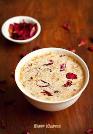
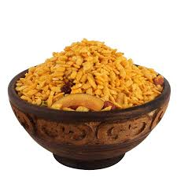

Recipes



"Indulge in our delightful desserts, where every bite is a sweet escape!"
Recipes
Master the art of cooking with these simple and useful tips.
Wrap herbs in a damp paper towel and store them in a zip-lock bag inside the fridge to keep them fresh longer.
Add a dash of olive oil to your boiling water to prevent pasta from sticking together.
When baking, bring butter, eggs, and milk to room temperature to achieve the perfect texture.
Tasting your food throughout the cooking process ensures a balanced flavor in the final dish.
A sharp knife makes prep work faster and safer. Sharpen your knives regularly for best results.
Season each step of your cooking to layer flavors effectively, rather than adding salt only at the end.
After cooking meat, let it rest for a few minutes to allow the juices to redistribute, making it more tender and flavorful.
Overcrowding the pan lowers the temperature and prevents proper browning. Cook in batches if necessary.
Place a damp kitchen towel under your cutting board to keep it from sliding while you chop.